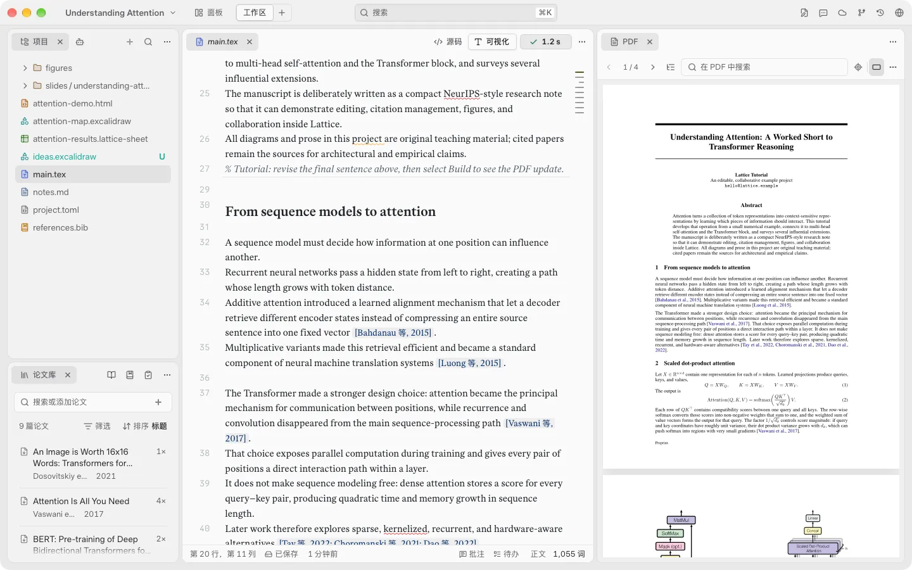
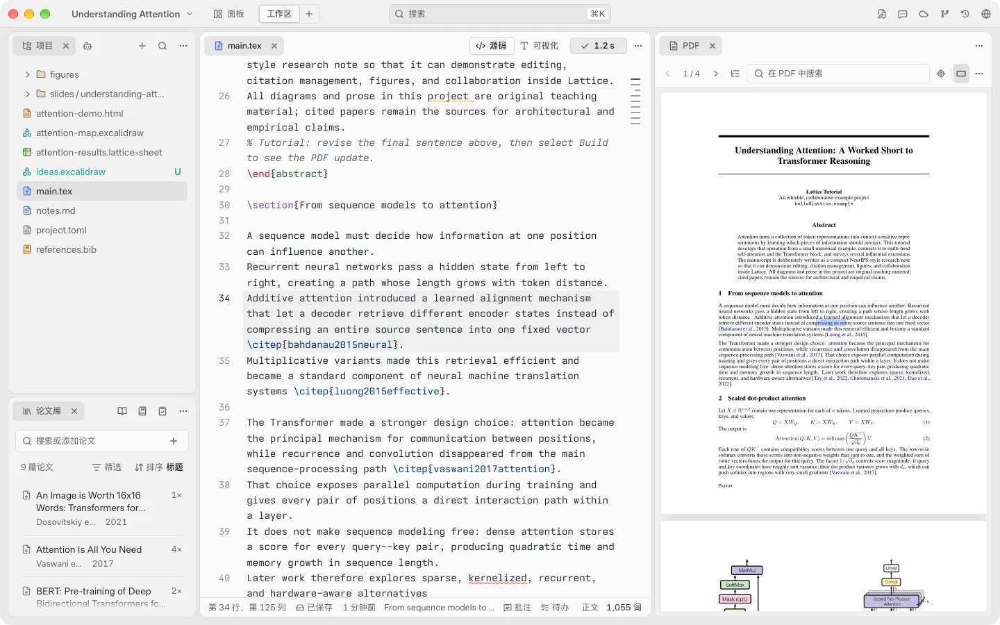

写作
编辑器
.tex 文件在源码编辑器中打开，输入时有补全和诊断。编辑器上方可以切换：
- 源码：LaTeX 原文。
- 可视化内容：同一个文件，标题、强调、公式、列表和图片直接渲染出来。编辑的仍是同一份文本，随时可以切回。

写作时常用的功能：
- 格式快捷键：
⌘B加粗、⌘I强调、⌘⇧M行内公式、⌘/注释一行、⌘⌥E套上公式环境。完整列表见 快捷键（⌘?）。 - 查找替换：
⌘F在当前文件，⌘⇧F在整个项目。 - 跳转：
⌘P打开任意文件，⌘G跳到某行，⌘⇧O跳到某节或某个 label。 - 大纲：状态栏里的章节名，以及编辑器右边缘的标记，可以按文档结构跳转。
- Markdown 笔记、表格、HTML 页面、幻灯片和 白板 都放在同一个项目里，用各自的编辑器打开。
Lattice 边写边保存，状态栏的 已保存 显示保存时间。
源码旁边的 PDF
每次保存都会编译 PDF（见 编译与排错），PDF 面板原地刷新。在两者之间跳转：
- 在 PDF 里 双击 一句话，跳到写出它的源码行。
- 在源码里按
⌘⇧J（在 PDF 中查看），在 PDF 中显示当前行。

PDF 也可以放进单独的窗口，适合用第二块屏幕：在命令面板（⌘K）里搜索「在单独窗口中打开 PDF」。